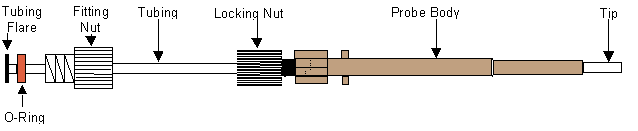

Replacing Substrate Probe

| Substrate Probe | Must |
|---|---|
| Tip (clear tubing) |
|
| Tubing |
Note: Small drops of substrate left in the probe after pump drawback can indicate kinked tubing.
|
| Locking nut (black) |
|
| Fitting nut (white) |
|
-
Remove the substrate probe.
- Disable the motors and gently push the probe plate downward, stopping before the aspirate probes touch the bottom of the wash-read carousel.
- Remove the substrate probe from the probe plate by pushing downward on the 1/4 turn nut and rotating it counter-clockwise.
- Slide the probe body out of the probe plate.
- Loosen the substrate probe fitting nut from the substrate heater. Remove the o-ring with the fitting.
-
Install the substrate probe.
- Install a new probe. Lock the probe into place by sliding the probe body into the probe plate socket, pushing it downward, and rotating it 1/4 of a turn clockwise.
- Install the fitting nut into the substrate heater and rotate the nut clockwise until it is finger-tight.
- Enable the motors, and home the wash arm.
-
Verify correct substrate probe installation.
- Prime the substrate pump two cycles and complete System Checks.
- Confirm all specifications are meet.